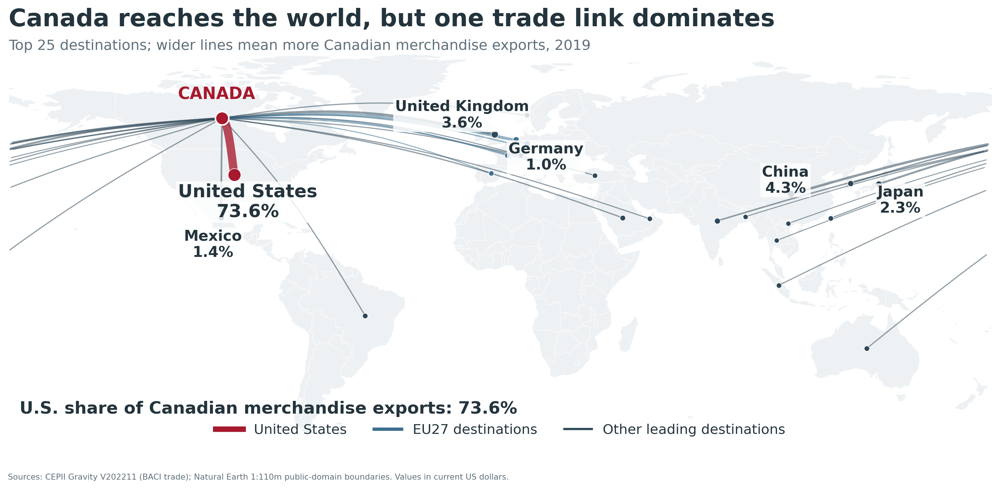
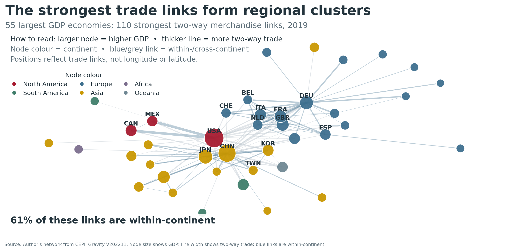

ECON 342 · Week 4
Why does Canada trade so much with the United States?
Weeks 2–3 asked what Canada can export. Gravity asks where it exports—and how much.
Today: market size, distance, borders, and relationships
Evidence: 39,402 worldwide country pairs
Case: Canada–U.S. versus Canada–EU27
Use ← →, swipe, or the controls below.
Canada’s trade is highly—but not equally—U.S.-oriented
Nearly three of every four merchandise-export dollars went to the United States.
Notice Why is the export relationship more concentrated?
Source: Statistics Canada Table 12-10-0171-01, 2025. Customs basis; imports classified by origin.
Geography is visible before we run a regression

Discuss Give one market-size reason and one trade-cost reason for the dominant U.S. link.
Source: Author’s visualization from CEPII Gravity V202211, 2019.
The same pattern appears worldwide

Read it Large hubs suggest economic mass; regional clustering suggests distance and shared institutions.
Source: Author’s visualization from CEPII Gravity V202211, 2019. Network links are selected for legibility.
Gravity combines one pull and one resistance
Economic mass pulls trade up
Larger GDP → more trade
- A larger exporter can supply more.
- A larger importer can buy more.
- GDP is our simple measure of market size.
Trade costs push trade down
Greater distance → less trade
- Freight, time, inventories, and coordination rise.
- Search, trust, language, borders, and policy matter.
- Distance summarizes more than fuel cost.
Think Name one cost of distance that still matters when the traded product is digital.
Can market size offset distance?
i is the exporter; j is the importer. Hold the exporter fixed and compare partner B with partner A.
With βd = θ = 1
Predicted trade is the same: market size exactly offsets distance.
Your turn Set B to four times as large and twice as far. Predict before moving the sliders.
A distance elasticity turns “farther” into a number
Predicted trade ratio
37% less trade, holding the included variables fixed.
For a large change, calculate the power. Do not multiply the coefficient by 100.
One observation is one directed country pair
Directed dyad
CAN → USA and USA → CAN are two different observations.
Completed zero
A missing BACI flow becomes zero only when reporting coverage supports “no recorded trade.” Other missing flows stay missing.
Source: CEPII Gravity V202211 and BACI, 2019. Merchandise trade, current US dollars.
The worldwide distance gradient is large and noisy
Hover or focus a point for the distance, geometric-mean trade, and number of dyads.
This binned picture is descriptive. The line is not a causal effect of kilometres.
Source: Author’s calculation from CEPII Gravity V202211, 2019; positive merchandise-trade flows.
Read every term before reading the coefficients
Outcome
Xij is exports from origin i to destination j.
Predictors
GDP and distance are continuous; border, language, and RTA equal 0 or 1.
Residual
uij collects what this short list does not explain.
Holding fixed means fixing these included variables—not every historical, institutional, or firm-level difference.
Discuss Name one omitted bilateral factor that could be correlated with distance or an agreement.
The signs are stable; the magnitudes are not
Point: coefficient estimate
Whisker: approximate 95% interval
Zero line: no conditional association
PPML retains eligible zero flows. The language interval crosses zero; the distance estimate is −0.666.
Find it Which coefficient changes most? Which interval crosses zero?
Source: Author’s estimates from CEPII Gravity V202211, 2019. OLS uses 28,113 positive flows; PPML uses all 39,402 eligible dyads. HC1 intervals; descriptive.
Slopes and 0/1 indicators translate differently
| Change, holding regressors fixed | PPML coefficient | Exact calculation | Predicted difference |
|---|---|---|---|
| Distance doubles | −0.666 | 100 × (2−0.666 − 1) | 37% less |
| Shared border: 0 → 1 | 0.362 | 100 × (e0.362 − 1) | 44% more |
| Official language: 0 → 1 | 0.146 | 100 × (e0.146 − 1) | 16% more |
| Trade agreement: 0 → 1 | 0.290 | 100 × (e0.290 − 1) | 34% more |
For an indicator, 100(eb − 1) is exact. 100b is only an approximation.
Author’s PPML estimates from CEPII Gravity V202211, 2019. The language interval includes zero; the displayed distance, border, and RTA intervals do not.
Zero trade is information—not a number we can log
The log-OLS problem
Log-OLS drops 11,289 completed-zero dyads. Adding a constant would make the result depend on an arbitrary choice.
The PPML idea
Estimate the conditional mean in levels. Observed trade can equal zero; fitted trade remains positive.
PPML does not require trade to be a count, nor its variance to equal its mean. Robust standard errors are still needed.
Reason If distant pairs are more likely to trade zero, what could we miss by dropping every zero?
This cross-section is powerful—but not causal
What it does
- Summarizes a strong worldwide regularity.
- Provides transparent elasticity calculations.
- Builds a benchmark from observed bilateral features.
What remains unresolved
- Policy can respond to expected trade.
- History and supply chains are omitted.
- Each country’s alternative markets matter.
Restaurant analogy Is a restaurant 10 km away “far” when every alternative is 100 km away?
10-minute break
Back at 11:15
Next: can gravity account for Canada’s U.S. orientation?
Rule for the EU: predict every member-country pair first, then aggregate in levels.
Observed and fitted trade answer different questions
Observed U.S./EU27 ratio: 14.2×. Fitted ratio: 4.1×. Residual orientation: 3.5×.
Source: Author’s estimates from CEPII Gravity V202211 and BACI, 2019. EU27 excludes the United Kingdom.
The EU27 is 27 dyads—not one fictional country
Observed export ratio
Fix Canada as exporter. Sum actual exports to the 27 EU members.
Fitted export ratio
Predict all 28 dyads in levels, then add the EU predictions.
Why? Averaging EU distances or logs generally cannot reproduce a sum of country-level trade predictions.
Geography explains part of a larger orientation
Move left to right. Each floating bar changes the running log ratio.
Measured gravity reaches 4.12×; residual orientation multiplies it by 3.45 to reach 14.22×.
This is an order-dependent accounting exercise—not a causal decomposition.
Trace it Which measured step adds the most after GDP?
Source: Author’s PPML accounting from CEPII Gravity V202211 and BACI, 2019.
CETA lowers one cost; it does not move Europe closer
CETA has applied provisionally since September 2017. It lowers tariffs and some customs and regulatory frictions.
Large EU demand pulls trade up. Distance, fixed export costs, product fit, and established networks still push it down.
Sources: Global Affairs Canada, CETA explained; CEPII Gravity and BACI, 2019. The US$53.3B fit gap is a conditional benchmark—not guaranteed exports or a causal CETA estimate.
Quebec trades far more with the EU27 than B.C.
Remaining 3.74×: products, firms, logistics, history, and B.C.’s Pacific alternatives may matter.
Sources: Statistics Canada 12-10-0173-01 and 36-10-0222-01; CEPII. Montreal/Vancouver–Brussels distance proxies; imports use customs-clearance province.
Canada diversified—but geography did not disappear
Do not confuse three objects
- 22×: McCallum’s conditional home-bias ratio.
- 44%: Anderson–van Wincoop’s border-removal counterfactual.
- 6.9%: Bemrose et al.’s provincial-border tariff equivalent.
A ratio, a counterfactual change, and a tariff equivalent are not competing estimates of one quantity.
Sources: Statistics Canada 12-10-0171-01; McCallum (1995); Anderson & van Wincoop (2003); Bemrose, Brown & Tweedle (2017).
Week 4 handwritten quick check
- In plain language, state gravity’s two forces. Use them to explain why Canada might trade more with the U.S. than with the EU27. No equation. [4]
- The PPML distance coefficient is −0.666. Calculate 2−0.666, then interpret both the ratio and the percent difference when distance doubles. [3]
- Canada’s observed export U.S./EU27 ratio was 14.2; gravity fitted 4.1. Calculate 14.2 ÷ 4.1, interpret it, and explain why it is not automatically “the CUSMA effect.” [3]
One-sentence discipline: use “is associated with” for this cross-section. Every numerical answer needs a unit or percent interpretation.